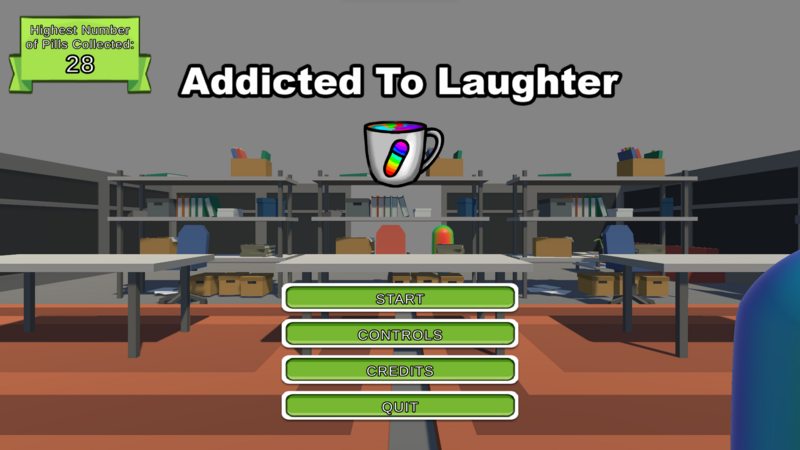
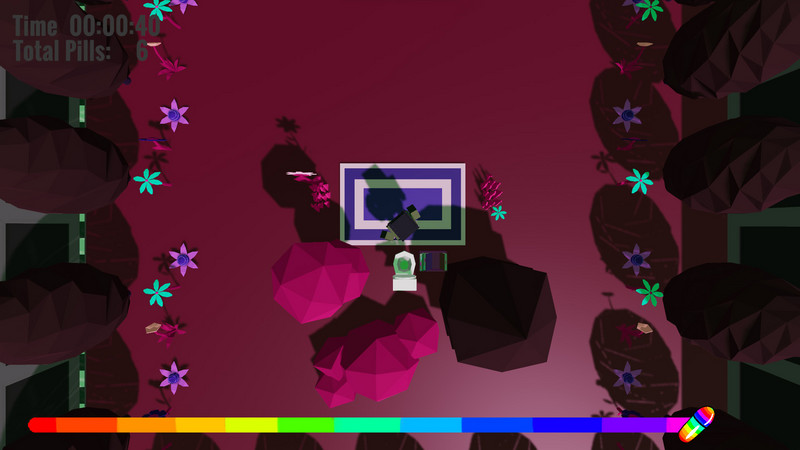
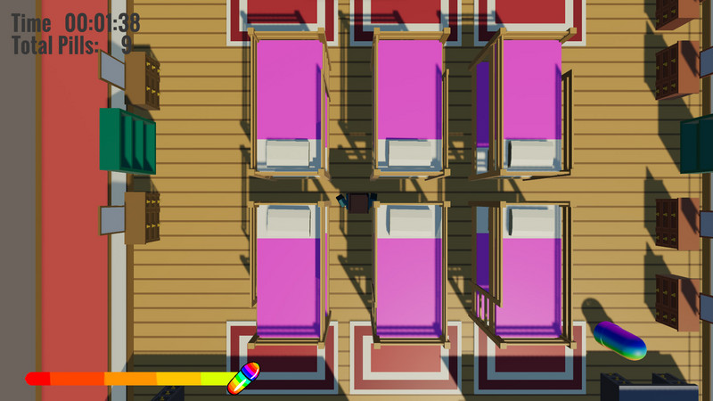
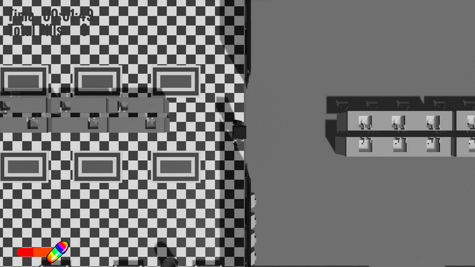
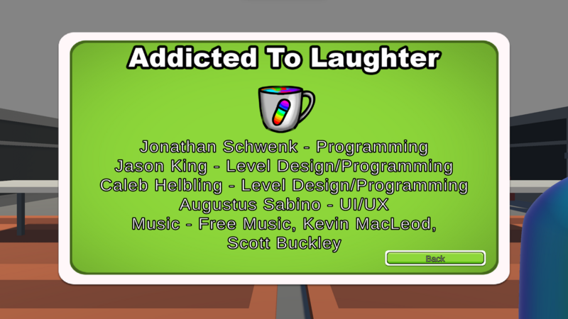
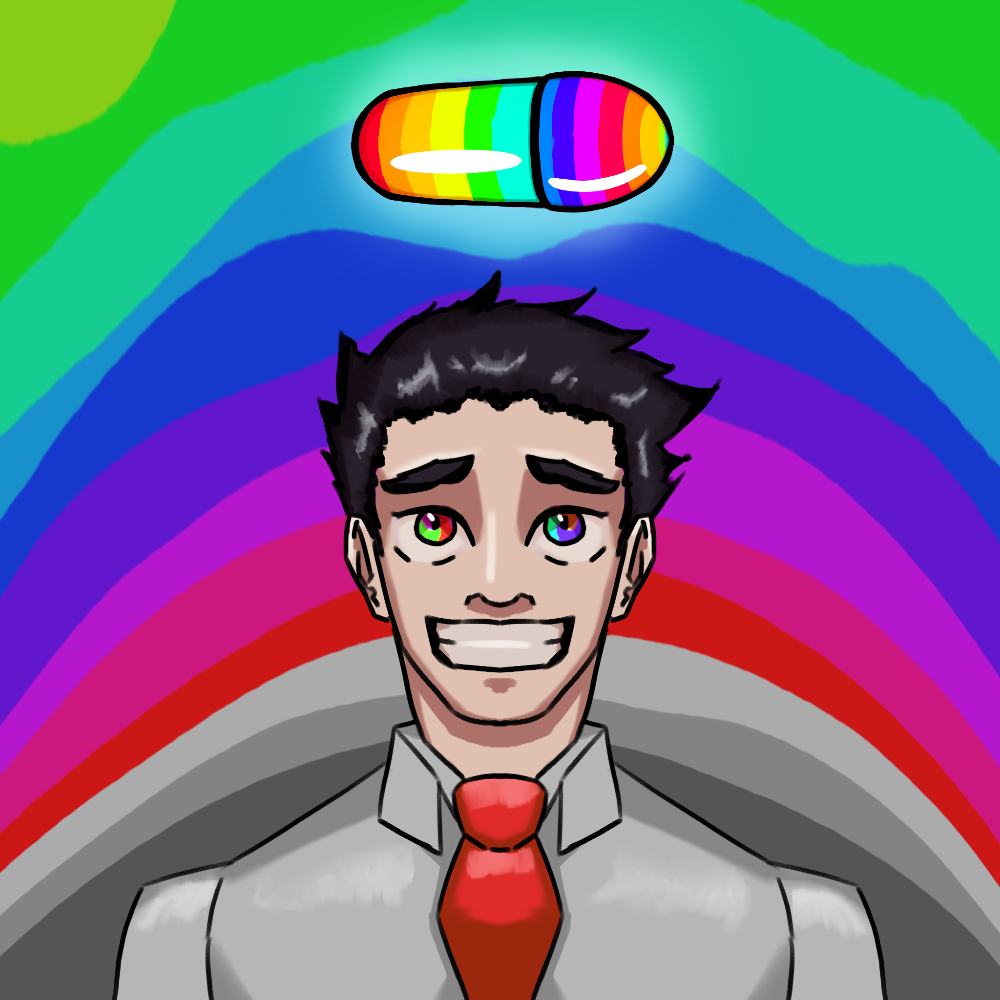
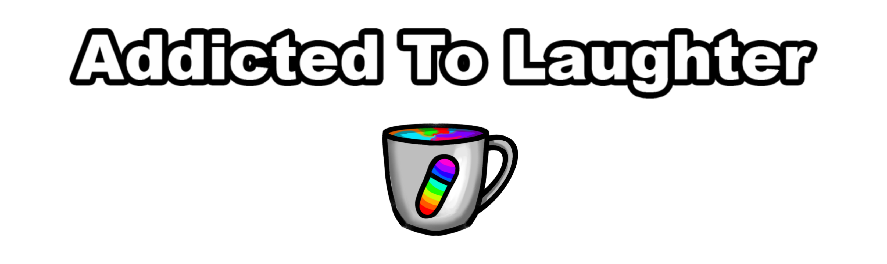

Description: Addicted to Laughter is a top down infinite exploration game, where the player must collect pills to increase happiness. How long will you be able to survive the endless maze of offices?
Trailer:
Screenshots:





Contributions:
Art:
This diagram is used to display the two main components of the core gameplay loop: dialogue and traversal. These two systems feed into each other
through puzzles, enemies, and obstacles. After solving one of these interactions with Komori or Amon, or both, the player will be directed back into a dialogue and thus the gameloop continues.

This diagram displays how I seperated the scripts revolving around my player into animation based scripts and data driven scripts. These scripts utilize components, so no two scripts should rely on another. This means that I can add new scripts without the worry of damaging the code in another script.

The diagram for the enemy's code structure is very similar to the player's code structure. The only difference, at this current juncture, is that the sound code is located in the animation script rather than its own seperate script. This will be changed as more enemies are added to the game.
This diagram depicts the flow of how dialogue works in DWNC. When a dialogue is triggered in a level, the data (reactions, the names of characters, etc.) of that dialogue sequence is sent to the dialogue manager. The dialogue manager takes that data, stores it in a queue, and pops that data from the queue to be displayed on a Unity canvas.